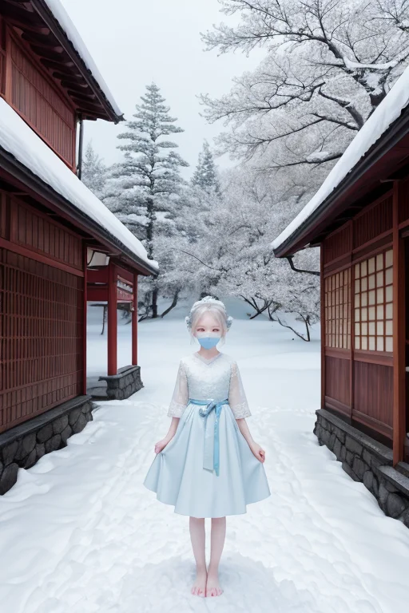

第一章 現実の秋田
あなたはまだ気づいていない。この土地にも、王がいることを。
日本海の荒波が男鹿半島の岩肌を削る。冬の海は鉛色に曇り、水平線は陸との境界を曖昧にする。ここは境界の地だ。海と陸、外と内、喧騒と静寂。その狭間で、歪みは静かに蓄積される。地震の巣は、この冷たい海の底にも眠っている。
角館武家屋敷通り。枝垂れ桜の裸木が、雪を纏った黒塀に影を落とす。かつて佐竹藩が北の守りを固めたこの地には、今も威厳と共に、辺境であることの孤高が染みついている。訪れる人は少なく、足音は雪に吸われる。ここには、声にならない歴史の重みという名の、もう一つの沈黙があった。
その沈黙の中心に、彼は立つ。純白と淡青の衣をまとった、アキタリア・ネージュ。雪王は、目を閉じ、掌で地面の微かな軋みを感じ取る。彼の役目は、歪みが爆発するその一歩手前で、力をほんの少し逸らすこと。大災害を消すことはできない。ただ、揺れを一歩手前で受け止め、津波の速度を一秒遅らせる。それが、星から遣わされた王の、唯一の調整である。
彼は何も語らない。沈黙こそが、この土地の現実に寄り添う唯一の方法だと知っているからだ。
第二章 歪みの兆候
田沢湖の深碧の水面が、微かに、理由なく揺らいだ。それは地震ではない。湖底を流れる伏流水脈に、遠く離れた海底の巨大な歪みが、水という媒体を通じて伝わってきた「予兆」だった。アキタリア・ネージュは乳頭温泉の森の中に立ち、その微細な水脈の震えを静かに感知する。彼の王国「アキタリア・ネージュ」は、雪と沈黙を基調とする。騒がしい警告は発しない。彼はただ、掌をかざし、湖面に伝わりつつある歪みの波動を、雪が音を吸収するように、ほんの少し「濾過」した。波紋は消え、水面は再び鏡のように静かになった。
しかし、歪みは形を変えて現れる。男鹿半島の沿岸部で、不自然に早い時期の異常な高波が観測された。これは、彼が濾過した力の一部が、別の経路で漏れ出したものだ。王は全てを制御できない。調整とは、常に別の場所に新たな「しわ寄せ」を生む可能性を含んでいる。
彼の傍らで、主席妖精ネージュリィが雪のように舞い、王の無言の焦りを静かに鎮めようとする。王は自らに問う。この沈黙による調整は、問題から目を背ける「逃避」なのか。それとも、騒ぎ立てずに現実を受け入れ、可能な範囲で手を尽くす「力」なのか。答えは、雪のように降り積もる沈黙の彼方に、まだ見えなかった。
第三章 王の葛藤
田沢湖の深碧の水は、鏡のように周囲の山々を静かに映し出していた。アキタリア・ネージュは湖畔に立ち、自らの内なる問いと向き合う。なまはげの仮面が村を巡る夜、人々は畏怖の声を上げる。あの叫びは、一年の穢れや怠惰という「内なる歪み」を、外部の恐ろしい形を借りて表出させ、浄化するための装置だった。彼の行う「沈黙の調整」もまた、巨大な地殻の歪みという圧倒的な力を前に、目立たぬ微調整によって「しわ寄せ」の方向を僅かに変えること。それは、力の前での「屈服」なのか。それとも、力を直視した上での、静かなる「抵抗」なのか。
ネージュリィが彼の肩に舞い降り、冷たい結晶を散らす。感情を持たぬはずの王の胸に、初めて「もどかしさ」という熱に似た感覚が渦巻いた。全てを鎮めることはできない。ならば、この沈黙は無力なのか。彼は乳頭温泉の湯煙の向こうに、雪に埋もれながらも灯りを絶やさない横手のかまくらを思い浮かべた。静寂の中にこそ、次の朝を待つ意志が宿るのではないか。答えは出ず、雪は音もなく降り続けた。

第四章 妖精との対話
角館武家屋敷の枝垂れ桜は、まだ蕾を固く閉ざしていた。雪の下で春を待つ静かな時間。ネージュリィは王の掌の上で微かに光り、声ではなく、雪の結晶が織りなすかすかな振動で語りかけた。
「私たちは、出会いも別れも、調整の一部としてしか知りませんでした。雪が降り、積もり、やがて解けるように。しかし、この地で感じます。なまはげの仮面の裏にある畏れと慈しみ。かまくらの灯りが消える時の、少しの寂しさと、また灯すという確信。これらは、単なる現象の推移ではないのですね」
王は黙って聞いた。ナマハルが傍らに現れ、無地の仮面を向けた。
「沈黙は、言葉を失った逃避かもしれません。でも、この地の沈黙は、違う。厳しい冬を、怒りも嘆きもせずに受け入れる力。その静けさの底で、次の季節を準備する力。私たちは、ただ調整するだけの存在でした。今、この沈黙が、何かを『待つ』力であることを学びつつあります」
雪が一片、王の睫毛に止まった。冷たさの中に、ほのかな温もりが宿っているように感じた。
第五章「微調整と余韻」
大曲の花火大会の夜、打ち上がる光の轟音が、人々の歓声を包み込む。王は遠くの丘に立ち、一瞬だけ手を挙げた。風向きが微かに変わり、煙が観客席を覆うことを防いだ。それは大きな災害の調整ではない。ただ、人々の記憶が、少しだけ美しく残るための微細な調整だ。
角館の枝垂れ桜の下を、一人の写真家が佇んでいた。彼は長年、故郷の風景を追い続け、最近、どうにも撮りたい「静けさ」が捉えられずにいた。王が通り過ぎる時、一片の雪が、偶然にもレンズの前をふわりと横切った。シャッターを切った写真家は、後日、その一枚に、雪と桜の蕾の、言葉にならない「間」が写っているのを見て、はじめて求める静寂が「空白」ではなく「余白」であることに気付く。
王は調整を終え、田沢湖の深碧を眺める。感情を持たぬはずの胸に、確かな「待つ」感覚が根付いている。それは、春を待つ雪解け水の音のように、静かで確かな力であった。
あなたの町にも、王がいる。